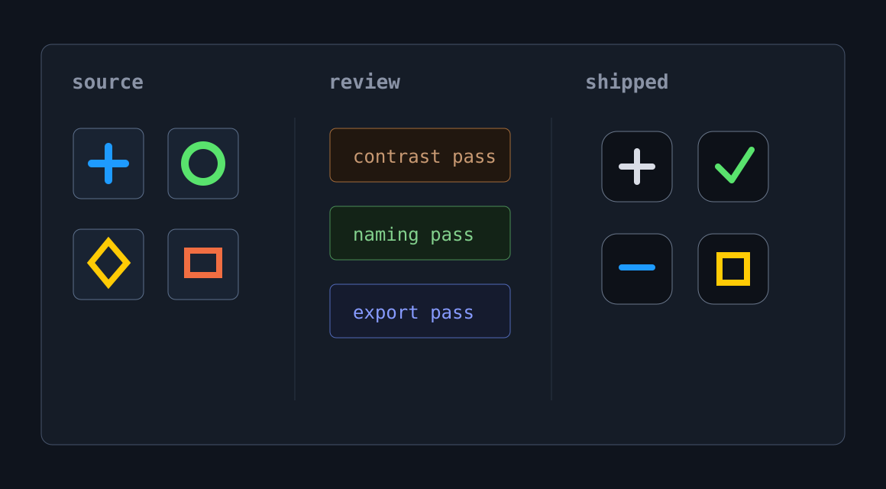

ROLE
Systems design, asset QA, documentation.
%design systems work%
A placeholder case study for an icon production and QA workflow. The page is ready for final screenshots, diagrams, and copy once the content is approved.

Systems design, asset QA, documentation.
Making icon delivery more consistent from source file to product.
Placeholder content with visual asset slots in place.